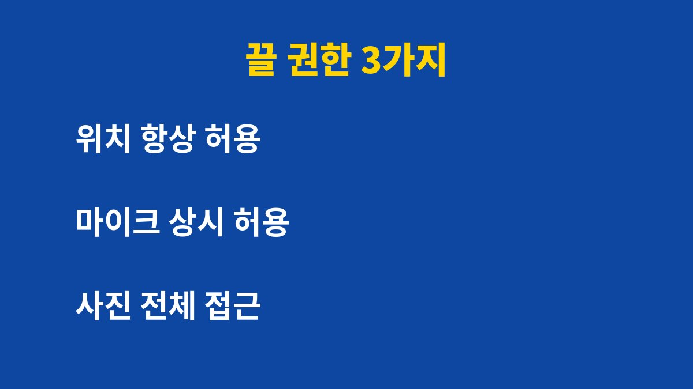
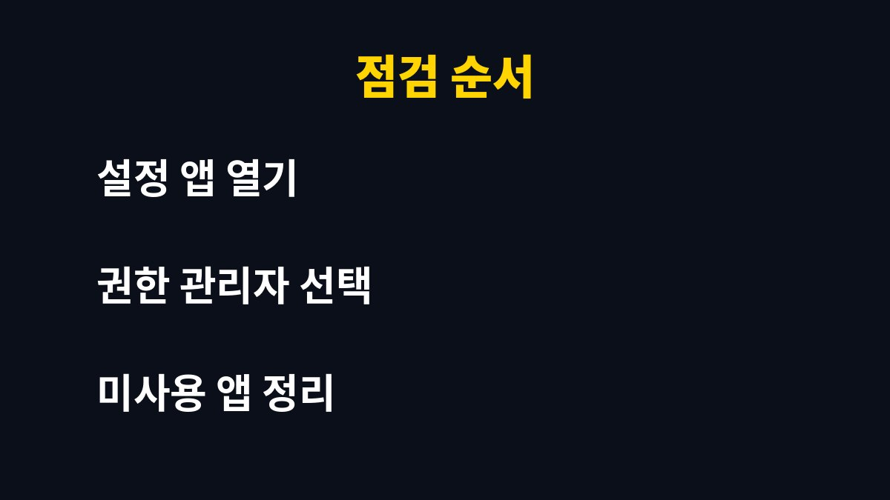

앱 권한 점검은 5분이면 끝나며, 위치·마이크·사진 접근을 막는 것만으로 개인정보 노출 위험을 크게 줄일 수 있다. 스마트폰을 매일 쓰는 사람이라면 한 번쯤 확인해야 하는 설정이다. 그런데 권한을 무조건 끄면 오히려 앱이 멈추거나 알림이 사라질 수 있다. 이유는 아래에 있다.
앱을 처음 설치할 때 누른 허용 버튼은 대부분 기억나지 않는다. 그 허용이 그대로 남아 몇 달, 몇 년째 유지되는 경우가 많다. 안드로이드는 설정의 개인정보 보호 메뉴에서, 아이폰은 설정의 개인정보 보호 및 보안 메뉴에서 권한별 목록을 볼 수 있다.
특히 위치, 마이크, 카메라, 사진, 연락처, 문자는 민감도가 높은 항목이다. 이 중 하나라도 쓰지 않는 앱에 열려 있다면 정리 대상이다. 게임이나 계산기 앱이 연락처를 요구할 이유는 거의 없다.

가장 먼저 볼 것은 위치 권한이다. 지도나 배달 앱은 사용 중에만 허용으로 충분하다. 항상 허용으로 두면 앱을 쓰지 않을 때도 이동 경로가 쌓일 수 있다.
두 번째는 마이크다. 통화·녹음·음성 검색 앱이 아니라면 허용할 필요가 없다. 세 번째는 사진 접근이다. 요즘 운영체제는 선택한 사진만 허용하는 방식을 제공하므로, 전체 접근보다 선택 접근을 쓰는 것이 안전하다.
| 권한 | 권장 설정 | 주의할 점 |
|---|---|---|
| 위치 | 사용 중에만 허용 | 날씨 알림이 늦어질 수 있다 |
| 마이크 | 필요한 앱만 허용 | 통화 앱은 꺼면 안 된다 |
| 사진 | 선택한 사진만 | 백업 앱은 전체가 필요하다 |
| 연락처 | 메신저만 허용 | 친구 찾기가 안 될 수 있다 |
대부분의 앱은 권한이 없어도 핵심 기능은 작동한다. 필요한 순간에 앱이 다시 권한을 요청하므로, 처음에는 가장 좁게 허용하고 필요할 때 늘리는 방식이 좋다. 이 방식이 가장 안전하면서도 불편이 적다.
다만 금융 앱, 인증 앱, 사진 백업 앱은 권한을 막으면 기능이 제한될 수 있다. 이런 앱은 한 번에 끄지 말고 하나씩 바꾸며 정상 작동을 확인하는 것이 좋다.

설정 앱에서 권한 관리자를 열고 위치, 마이크, 카메라 순서로 들어간다. 각 목록에서 최근에 쓰지 않은 앱을 먼저 거부로 바꾼다. 그다음 사용하지 않는 앱 자체를 삭제하면 권한 문제가 한 번에 정리된다.
마지막으로 새 앱을 설치할 때는 허용 팝업에서 항상 허용 대신 앱 사용 중에만 허용을 고르는 습관을 들이는 것이 좋다. 한 달에 한 번만 점검해도 충분하다.
이 글이 도움이 되었다면 블로그를 구독하고 다음 IT 생활 팁도 확인하는 것이 좋다.
기사·공식 발표 기준이며 출시·가격 정보는 바뀔 수 있다.